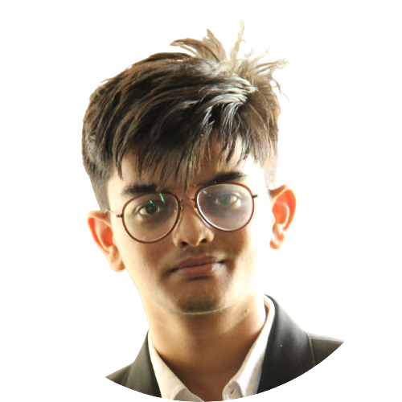

|  | Aryan Sharma |
A highly motivated and results-driven fresher seeking a opportuinity position in Development where I can utilize my Frontend skills to contribute to the success of the organization. Committed to continuous learning and growth, I aim to leverage my strong development and analytics skills to drive innovation, exceed goals, and make a meaningful impact within a dynamic team environment.
Job Title:Frontend Developer(Intern)
Employer:PrimaThink Private Limited
Duration:November 2022 - January 2023 (3 Months)
Job Title:Frontend Developer(Intern)
Employer:PrimaThink Private Limited
Duration:November 2022 - January 2023 (3 Months)
Club Position:Web Master
Club:IEEE Signal Processing Society Student Chapter
Duration:November 2022 - Ongoing